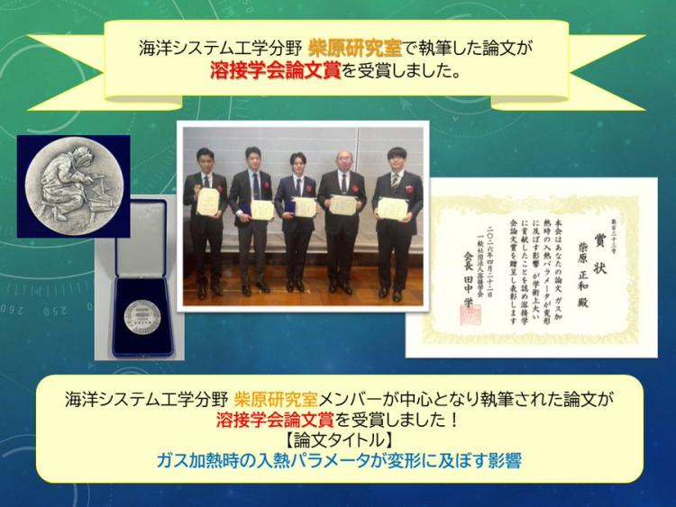
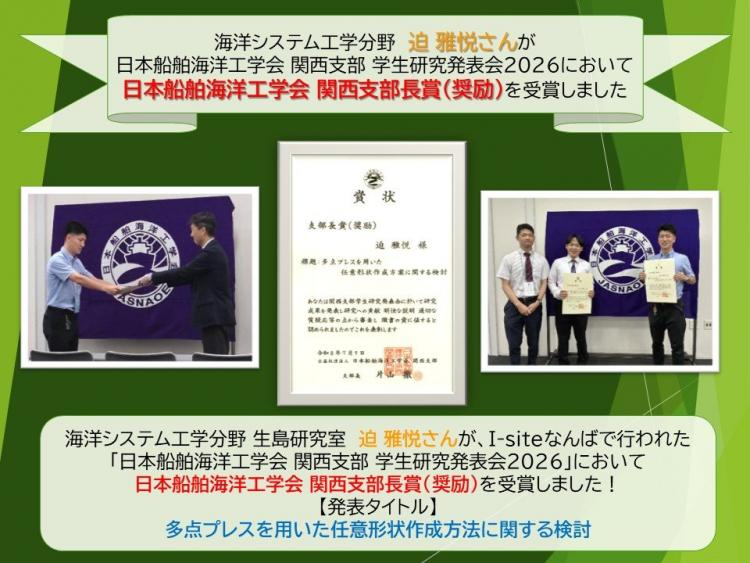
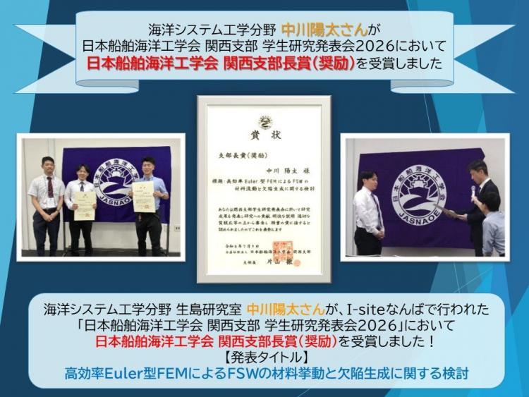
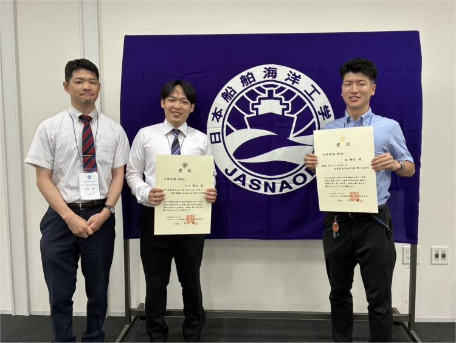
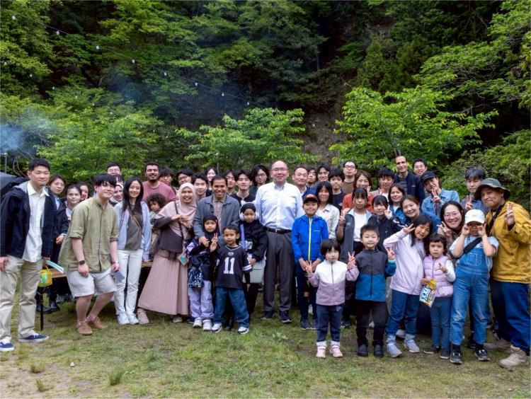
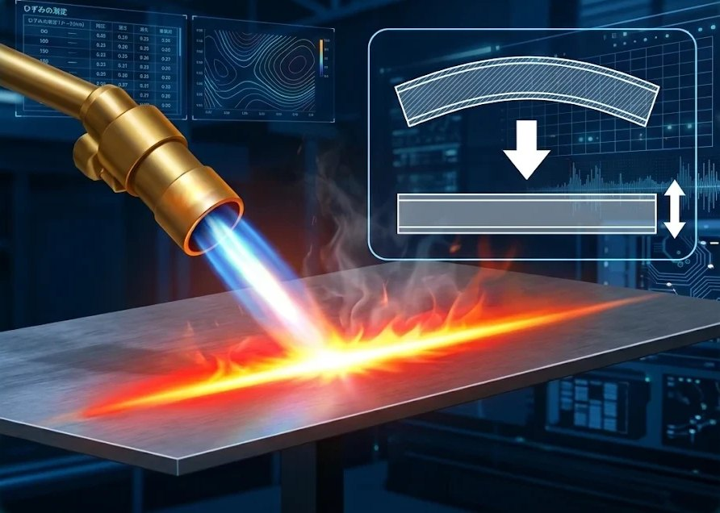
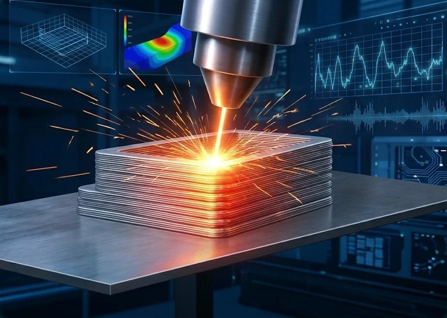

ロゴ
大阪大学OSAKA UNIVERSITY
接合科学研究所JWRI
柴原研究室Shibahara LaboratoryJoining and Welding Research Institute, The University of Osaka
ロゴ
大阪大学OSAKA UNIVERSITY
接合科学研究所JWRI
柴原研究室Shibahara LaboratoryJoining and Welding Research Institute, The University of Osaka
接合・溶接の科学で
ものづくりの未来を拓く
ADVANCING MANUFACTURING
THROUGH JOINING AND WELDING SCIENCE


お知らせNEWS

柴原研究室・生島研究室 メンバーが「溶接学会春季全国大会」において受賞した「溶接学会論文賞」に関する記事が、大阪公立大学工学部公式Xおよび工学部公式Webサイトに掲載されました。

生島研究室の迫 雅悦さんが「日本船舶海洋工学会 関西支部 学生研究発表会2026」において受賞された「関西支部長賞（奨励）」が、大阪公立大学工学部公式Xおよび工学部公式Webサイトに掲載されました。

生島研究室の中川陽太さんが「日本船舶海洋工学会 関西支部 学生研究発表会2026」において受賞された「関西支部長賞（奨励）」が、大阪公立大学工学部公式Xおよび工学部公式Webサイトに掲載されました。

生島研究室 中川 陽太さん、迫 雅悦さんが、I-siteなんばで行われた「日本船舶海洋工学会 関西支部 学生研究発表会2026」において日本船舶海洋工学会 関西支部長賞(奨励)を受賞しました。

5月6日に毎年恒例の柴原研・生島研合同BBQ大会が開催され、本年も、50名ほどの方にご参加頂きました。
溶接学会(大阪大学中之島センター)にて溶接学会総会があり、柴原研究室で執筆した論文「ガス加熱時の入熱パラメータが変形に及ぼす影響」が「溶接学会論文賞」を受賞しました。
ライブ計算LIVE SIMULATION
LIVE簡易デモ 溶接パス - ステップ 0 最大たわみ 0 Δx
計算で、溶接を見る。板の上を熱源が動き、温まり、冷えて反っていく。その様子を、いまこの画面の中で計算しています。マウスを乗せると視点が動きます。
研究テーマRESEARCH THEMES
 溶接・接合工学Welding and Joining
溶接・接合工学Welding and Joining 数値溶接力学Computational Welding Mechanics
数値溶接力学Computational Welding Mechanics 理想化陽解法FEMIdealized Explicit FEM
理想化陽解法FEMIdealized Explicit FEM AI・機械学習Artificial Intelligence / Machine Learning
AI・機械学習Artificial Intelligence / Machine Learning デジタルツインDigital Twin
デジタルツインDigital Twin 溶接ロボット・自動化Welding Robot and Automation
溶接ロボット・自動化Welding Robot and Automation
線状加熱・ひずみ取り技術Line Heating & Distortion Correction
金属AM（WAAM/DED）Metal Additive Manufacturing ショットピーニング解析Shot Peening Simulation
ショットピーニング解析Shot Peening Simulation 高温割れ・健全性評価Hot Cracking and Integrity Assessment
高温割れ・健全性評価Hot Cracking and Integrity Assessment
※画像は生成AIで作成したイメージです。